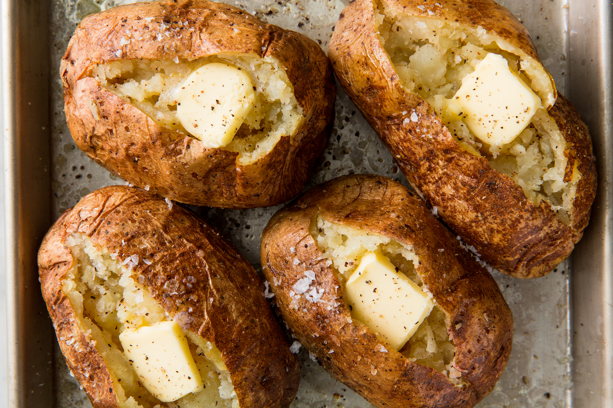

Best Baked Potatoes

Description
This is a foolproof method for cooking perfect baked potatoes every time!
Ingredients
- Salt and pepper
- 4 (7- to 9-ounce) russet potatoes, unpeeled, each lightly pricked with fork in 6 places
- 1 tablespoon vegetable oil
Steps
- Adjust oven rack to middle position and heat oven to 450 degrees. Dissolve 2 tablespoons salt in 1/2 cup water in large bowl. Place potatoes in bowl and toss so exteriors of potatoes are evenly moistened. Transfer potatoes to wire rack set in rimmed baking sheet and bake until center of largest potato registers 205 degrees, 45 minutes to 1 hour.
- Remove potatoes from oven and brush tops and sides with oil. Return potatoes to oven and continue to bake for 10 minutes.
- Remove potatoes from oven and, using paring knife, make 2 slits, forming X, in each potato. Using clean dish towel, hold ends and squeeze slightly to push flesh up and out. Season with salt and pepper to taste. Serve immediately.